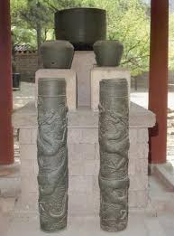
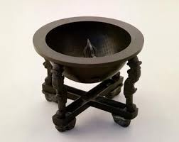

자격루 (自擊漏)
"스스로 쳐서[自擊] 시각을 알려주는 국가 표준 자동 물시계"

- 의의: 1434년(세종 16) 7월 1일부터 공식 사용된 조선 최초의 국가 표준 자동 시보 시계.
- 정치·사회적 가치: 유교적 통치 이념인 '관상수시(觀象授時, 백성에게 정확한 시간을 주어 농경을 돕고 삶을 개선함)'의 실천. 시각 측정 오류로 관리들이 중벌을 받던 폐단을 기술 혁신으로 해결함.
- 주요 기록 사료: 집현전 학사 김돈의 「보루각기(報漏閣記)」(제작 동기, 원리, 장영실의 기록 등) 및 김빈의 「보루각명(報漏閣銘)」.
1. 자격루의 핵심 작동 원리
자격루는 아날로그식 물시계의 정밀한 유압 측정 기술과 디지털식 자동 시보 장치를 결합한 하이테크 기구입니다.파수호 (물 공급) ➔ 수수호 (물 차오름) ➔ 부전(잣대) 상승 ➔ 방목(지렛대) 작동 ➔ 쇠구슬 낙하 ➔ 동판 전동 장치 가동
➔ 나무 인형의 시보 타격
인형별 시보 역할:
- 종: 시간(時) 안내
- 북: 경(更, 밤 시간) 안내
- 징: 점(點, 밤 시간의 세부 단위) 안내
- 정밀 유압과 부력 측정: 크고 작은 파수호(물통)에서 일정한 압력으로 물이 흘러내려 원통형 수수호(물받이 항아리)로 들어갑니다. 수수호 안의 물이 고이면 하루를 12시 100각으로 등분한 '부전(부표와 잣대)'이 수면을 따라 점차 상승합니다.
- 구슬 제어와 지렛대 시스템: 잣대가 올라가 일정 눈금에 도달하면 방목(지렛대 장치)을 건드리고, 그 끝에 있던 쇠구슬이 구멍 속으로 굴러 떨어집니다.
- 자동 시보와 시각 전시: 떨어진 쇠구슬이 동판을 쳐서 동력을 전달하면, 3개의 나무 인형이 종(12시각), 북(밤의 '경'), 징(밤의 '점')을 자동으로 타격합니다. 타격과 동시에 해당 시각의 십이지신 인형이 나타나 2시간 동안 자리를 지키며 상시 시각을 전시했습니다.
당시의 밤 시간 측정법
- 12시(時): 자시~해시 체계. 시간마다 종을 1번씩 타격.
- 경(更)과 점(點): 밤 시간을 5경(1경은 다시 5점)으로 세분화. 경에는 북을 치고, 점에는 징을 침.
- 인정(저녁 9시경) 때 28번의 종을, 파루(새벽 4시경) 때 33번의 북을 쳐 도성 문 개폐를 지시함.
2. 역사적 변천과 현존 유물
조선 전기 ~ 중기 (세종에서 중종까지)
- 세종 대 (1433년~1434년): 장영실 등이 완성. 경복궁 경회루 남쪽 보루각(報漏閣)에 설치되어 '보루각루' 혹은 '금루(禁漏)'라 불림. (1438년에는 천체 변화까지 결합한 옥루를 제작하여 흠경각에서 관리함).
- 기술의 전승 위기: 세종 사후 단종 대에는 보수 기술자가 단 1명만 남을 정도로 위기를 겪었고, 연산군 대(1505년)에는 보루각이 창덕궁으로 이전됨.
- 중종 대의 개량 (1536년): 낡은 세종 대의 것을 대체하기 위해 창경궁에 새 보루각을 짓고 개량형 자격루를 제작함. (김근사, 김안로 주도 / 김수성 공사 전담 / 자격장 박세룡 등 제작 참여).
현존 유물 현황 (국립고궁박물관 소장)
세종 대의 자격루는 전해지지 않으며, 현재 남아있는 것은 1536년(중종 31)에 제작된 개량본의 일부입니다.앙부일구 (仰釜日晷)
"하늘을 우러러보는 가마솥 모양의 해시계"

- 이칭: 앙부일영(仰釜日影)
- 의의: 1434년(세종 16) 종로 혜정교 앞과 종묘 앞에 설치된 대한민국 최초의 공공·대중 시계.
- 창제 참여자: 이천, 장영실(후대 기록 기반 추정), 이순지(실록 졸기 기록 기반) 등..
- 참고 기구: 원나라의 '앙의(仰儀)'를 참고한 것으로 추정됨 (이순지의 『제가역상집』에 앙의의 구조가 서술됨).
1. 앙부일구의 과학적 구조와 작동 원리
하늘의 태양이 동쪽에서 서쪽으로 운행함에 따라, 앙부일구 내부의 그림자는 반대 방향인 서쪽에서 동쪽으로 움직이며 시간과 절기를 동시에 나타냅니다.- 수영면(受影面 / 시반면): 반구형으로 오목하게 파인 가마솥 모양의 면. 해그림자의 길이가 시간과 계절에 따라 달라지는 특성을 정확히 반영하기 위해 오목하게 제작됨.
- 영침(影針): 수영면 안쪽에 비스듬히 고정된 뾰족한 침. 한양의 위도(북극고도 37도 30분)에 맞춰 설치됨.
- 비정형 선(Line)의 배치: 정확한 측정을 위해 가로·세로 선의 간격이 일정하지 않게 설계됨
- 세로선 (시각선): 12시를 나타내는 선. 글을 모르는 백성들도 시간을 알 수 있도록 십이지신(十二支神) 그림을 그려 넣어 대중시계로서의 기능을 극대화함.
- 가로선 (절기선): 계절별 태양 고도에 따른 그림자 길이를 측정하는 13개의 선. 그림자가 가장 긴 동지(가장 바깥쪽 선)부터 가장 짧은 하지(가장 안쪽 선)까지 파응함. (춘분·추분 중심선 주변은 간격이 넓고, 동지·하지로 갈수록 촘촘함).
- 십자 받침대: 네 개의 발이 지탱하며, 동서남북 방위를 맞추고 십자 홈에 물을 채워 정밀하게 수평을 잡음.
2. 조선 후기~말기: 휴대용 해시계로의 진화
세종 대의 공공시계로 출발한 앙부일구는 조선 후기로 갈수록 점차 소형화되어 개인이 소유하거나 가지고 다니는 휴대용 앙부일구로 발전했습니다. 청동, 돌(대리석), 자기, 상아 등 소재가 다양해졌으며 은상감 공예를 더해 예술적 가치를 높였습니다.스마트폰 1/4 크기의 하이테크 휴대용 앙부일구
- 오목한 반구형 중심에 침을 세우고, 언제 어디서나 방위를 맞출 수 있도록 소형 나침반(자석)을 부착함.
- 강건(姜湕) 제작 앙부일구 (1871년, 국립중앙박물관 소장): 회백색 대리석 재질에 청동 영침과 나침반(24향 표시)을 부착함. 세로 5.6cm, 가로 3.4cm, 높이 2.0cm의 초소형 크기. (※ 오경석이 소장했던 1875년작 강건 제작 앙부일구는 현재 일본 교토 개인 소장).
- 강문수(姜文秀) 제작 앙부일구 (1908년, 서울역사박물관 소장): 가로 3.1cm, 세로 7.2cm 크기. 아랫면에 서울의 정밀 위도인 '북극고 37도 39분 15초'를 새겨 넣어 표준을 삼음.
족보: 시계 제작을 가업으로 이은 '진주 강씨' 가문
조선 말기 휴대용 앙부일구의 정밀 제작은 명문가였던 진주 강씨 가문이 주도하고 전승했습니다. 강이오 (탁월한 예술적 재능을 지닌 문인화가 부친) -> 강건 (1871년 작 제작 주도, 한성판윤) & 강윤 (형) -> 강익수 & 강문수 (1908년 작 제작, 강건의 아들들)